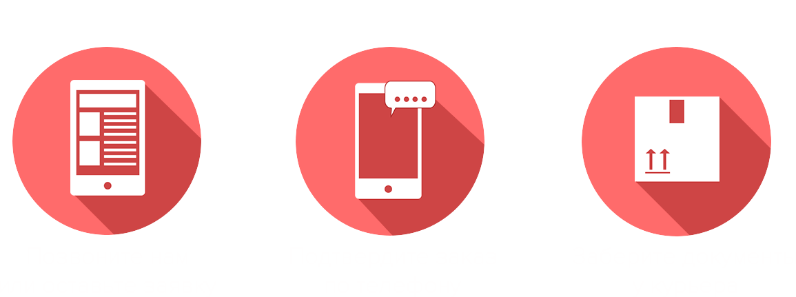

Наши Услуги
Справка с места
работы
Справка 2 НДФЛ

Выписка из банка
Подтверждение
бронирования гостиницы

Страховка для выезда
за рубеж
Билет на самолет
для визы
Купить справку о доходах (2НДФЛ) для визы – срочно за 1 день!
Для того чтобы получить визу, понадобится предоставить сведения о доходах гражданина. Одним из обязательных документов, отражающим финансовое состояние туриста, является справка о доходах с места работы по форме 2 НДФЛ.
Справка о доходах (2 НДФЛ) для получения визы
Справка о доходах – это официальный документ, который выдается сотруднику организации за определенный период работы в учреждении.
Посольства и визовые центры требуют документ с целью доказательства того, что гражданин действительно имеет стабильный доход в своей стране и не преследует цель остаться за границей на постоянное место жительства.
Чем выше доходы туриста, тем больше шансов у него оформить визу.
Образцы справок о доходах для получения визы
Чтобы избежать недоразумений и представить в посольство правильно заполненную справку о доходах, рекомендуем вам ознакомиться с образцом заполнения этого документа. Такую информацию можно найти на стендах визовых центров и в Посольстве. Прочитайте все внимательно, чтобы не утруждать себя необходимостью повторно собирать документы.
Как и где получить справку о доходах
для оформления шенгенской ВИЗЫ?
Для получения шенгенской визы россиянину понадобится собрать целый пакет документов, среди которых – справка о доходах. Получить ее можно в организации по письменному заявлению сотрудника. Работодатель обязан выдать этот документ своему работнику и указать достоверные сведения.
На бланке документа должны быть указаны реквизиты организации, сведения о сотруднике, его доходы за определенный период, стоять печать, а также подписи руководителя и главного бухгалтера.
Работодатель обязан выдать сотруднику справку о доходах не позднее 3 рабочих дней с момента подачи заявления на получение документа.
Как получить с нами документы для оформления ВИЗЫ за 1 день?
Мы прекрасно понимаем, как много времени и сил может отнять процедура получения визы. Если у вас нет ни желания, ни возможности заниматься сбором бумаг, то наша компания готова оказать содействие в получении справки о доходах всего за 1 день.
Сделайте 3 простых шага
Наши сотрудники владеют достоверной информацией о требованиях, которые предъявляются консульствами различных стран. Мы гарантируем, что вы получите на руки правильную справку о доходах.
Чтобы воспользоваться предлагаемой услугой и уже на следующий день получить подлинный документ о доходах с места работы, необходимо позвонить или оставить заявку на сайте.
Сотрудники нашей фирмы свяжутся с вами и попросят окончательно подтвердить свое намерение
.Как только документ будет готов, курьер доставит справку в удобное для вас время и место.
Наша компания сотрудничает с официальными ведомствами, а наши специалисты – это высококвалифицированные сотрудники. Все это позволяет говорить о качестве услуг и доверительном отношении.
Преимущества нашей компании:
- - разумные цены;
- - короткие сроки;
- - консультации сотрудников по вопросам получения документов для оформления визы;
- - получение подлинного документа.
Мы работаем для того, чтобы ваше участие в решении вопросов сбора документов для получения визы было минимальным. Благодаря сотрудничеству с нами, вы обойдете множество препятствий на пути к своей заветной цели.
Срок действия справки о доходах
Период действия справки о доходах для оформления визы ограничен. В большинстве случаев, устанавливается 30 дней с момента выдачи документа до получения визы. Поэтому заниматься сбором документов и заказывать все необходимые справки, выписки и т.д. нужно заблаговременно.
Каждое консульство выдвигает свои требования к перечню документов и сроку их действия. Поэтому, прежде всего, необходимо проконсультироваться по этому вопросу со специалистом.
Чтобы избежать возможных проблем, связанных с нарушением периода действия справки, нужно заказать документ, подтверждающий доходы туриста, за 3-5 дней до обращения в Посольство или визовый центр.